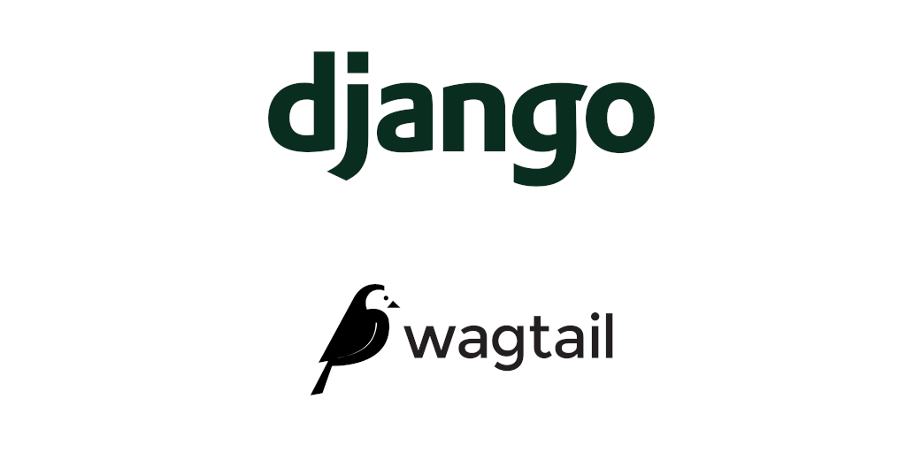

Django
Getting started with Wagtail for an experienced Django developer
Getting started with Wagtail for an experienced Django developer

Remote Inning is a big fan of Wagtail. We use this document internally to onboard Django developers who have not worked with Wagtail before. This document is a result of iterative development while browsing through by new developers. Now that we believe it has made our onboarding process very easy, we thought it would be good to share it with the outer world. And let Django developers experience how easy it is to get started with Wagtail and how much more we can do with it.
Introduction
Wagtail is a strong content management system focused on giving content editors a good admin portal to manage contents on their websites. The Zen of Wagtail mentions it:
“A CMS should get information out of an editor’s head and into a database, as efficiently and directly as possible.”
While wagtail is an editor friendly CMS, it is not an instant website in a box. It requires developers to design the internals and only give access to editors on the features they need access to.
“You can’t make a beautiful website by plugging off-the-shelf modules together - expect to write code.”
Wagtail is built on top of Django and similar to Django, it has a very good documentation. So go ahead with the getting started tutorial and get a feel of what it is like to build your first Wagtail site. The major difference you will notice is no use of views. The reason is explained in the request and response flow section. A brief overview of different terms used in the tutorial.
Django modelcluster
While going through the getting started tutorial you must have noticed a package named modelcluster used very frequently.
django-modelcluster is a package which Wagtail uses to work with a cluster of related objects without saving them in the database. For example in your first site, it allows you to add images to your blog post and see previews of it without even saving the draft version of it. Check out the project’s Readme for more details about the modelcluster package.
Content panels
You might have also noticed the use of content_panels, they are used to give you a good interface to edit your fields’ content in the admin. They are also used to group multiple fields together. For example, you used MultiFieldPanel to group date and tags together in admin. Checkout all the panel types that are available in wagtail.
Snippets
While creating the Categories feature, you have used Snippets by registering the BlogCategory model as snippet by using the decorator register_snippet. Note that snippets are nothing but Django models and not inherited from the wagtail Page model. It means that snippets are only created for the features which do not require a separate page URL. So decide carefully if the content type you want to build into a snippet might be more suited to a page. By not inheriting from Page you will be missing a lot of functionality for a snippet but you can still use panels to have a good editing interface in the admin.
Demo project: BakeryDemo
Now that you have a brief idea about some of the wagtail features, it is time to play around with a demo project which implements most of the wagtail features. Checkout bakerydemo, set it up locally, and browse through all the features that are there.
Notice the structure of the codebase on how the project has been divided into multiple Django apps. Look at the base app which implements the HomePage and other features which are required throughout the whole project, i.e GalleryPage and ContactPage. And other apps only implement the features which are specific to theirs, i.e BlogPage and BreadPage.
StreamField
You might have noticed that StreamField is used instead of RichTextField to store the content of the body throughout the project. StreamField gives you the flexibility to have different blocks on your blog posts. For example, you can have a StreamField which has functionalities to add Headings, Images, Videos, Quotes anywhere on your blog post. To define these functionalities you need to add respective blocks to your StreamField. E.g. In this project, StreamField inherits from BaseStreamField which has different custom blocks defined in the base app.
Now it is time to play around with one of the StreamField in the admin and notice how the changes are reflected when you publish them. To know more about StreamField refer to its documentation.
Passing data to templates
By now you might have also come across a model method named get_context. This method is used to manipulate the content of the page which is being sent to the template. For example look at the get_context in location app, which is being modified to send only the data which are live and not draft and it also orders the location by its title.
You can also implement methods to the models which can be directly used in the template. E.g. BreadIndexPage implements the authors method which is used directly in the template to get all the authors of that blog.
Now that you have made it this far it is time to take some rest because next, we are going to have a look into wagtail request and response flow.
How Wagtail works under the hood
Understanding wagtail request and response flow
Just like any other Django request, the journey of a Wagtail request starts from urls.py. Whenever you type any blog url say /blog/hello-world in your browser it matches the pattern and sends the request to the view, i.e serve. Now what serve does is, it finds the Site you requested and then finds the Page (which you originally requested) related to it. And then serves that Page.
serve method of a Page acts like a view which returns a TemplateResponse, TemplateResponse uses get_context to get the respective object’s data (similar to a normal Django request). Now as mentioned above you can also override get_context in your Page model to send some more data to the template.
Now that you’re here you should also browse through all the fields that Page model provides and all the methods that it gives out of the box.
Once you have an idea about all these concepts, you are ready to start working on wagtail projects or integrate it in an existing Django project.
Thanks for reading, hope you had a good time learning about Wagtail.
Tagged under
DjangoMore from our Blog
